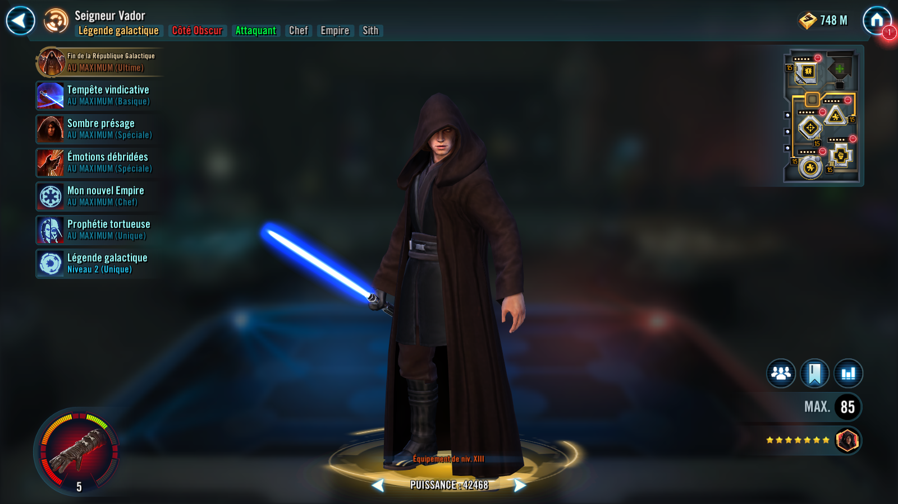

Lord Vader
Legendary Sith Lord who utilizes the actions of others to empower his own potential and is not to be underestimated
Legendary Sith Lord who utilizes the actions of others to empower his own potential and is not to be underestimated

Requires at least 65% Ultimate Charge to activate.
Ultimate Charge: Lord Vader gains Ultimate Charge when he uses Dark Harbinger. If Lord Vader is the Leader, when debuffed Dark Side allies receive damage he gains 2% Ultimate Charge, increased to 3% if that ally was an Unaligned Force User. If all other allies are Dark Side Clone Troopers at the start of encounter, Lord Vader gains 3% Ultimate Charge whenever a debuffed Dark Side Clone Trooper ally takes damage.
Lord Vader gains 50% of other Dark Side allies' current Mastery (stacking) until the end of the encounter, then they lose that much. Empire and Dark Side Unaligned Force User allies don't lose Mastery from this ability.
If 100% Ultimate Charge was used, Lord Vader instead gains 75% Mastery from this ability, dispels all debuffs on himself, takes a bonus turn, reduces his cooldowns by 1, and gains Ashes of the Republic for 5 turns, which can't be copied, dispelled, or prevented.
These Mastery gains will only trigger if the character has more than 0 Mastery.
Ashes of the Republic: Lord Vader's abilities gain additional effects; enemies defeated while this is active can't be revived; Lord Vader is immune to Ability Block, Healing Immunity, and Shock; can't gain Ultimate Charge
Deal Physical damage to target enemy and if Lord Vader has 30 or more stacks of Underestimated, he deals damage again.
Each time this ability deals damage in the same attack, it deals 25% more damage (max 50%).
Ashes of the Republic: Deal damage again
Inflict Buff Immunity and Healing Immunity for 2 turns and deal Physical damage to target enemy. This ability deals 20% more Physical damage on subsequent uses (stacking, max 5 stacks).
Lord Vader gains 1% Ultimate Charge and Empire and Dark Side Unaligned Force User allies recover 0.5% Health for each stack of Underestimated.
Ashes of the Republic: This attack also deals true damage
Deal Physical damage to all enemies and inflict Daze and 4 Damage Over Time effects for 2 turns, which can't be resisted. For each stack of Underestimated, this ability deals 2.5% more damage, and all Dark Side allies gain 1% Mastery (stacking) until the end of the encounter.
Ashes of the Republic: Inflict Ability Block for 1 turn which can't be dispelled or resisted, and increase target enemy's cooldowns by 2

Dark Side allies have +20 Speed, +20% Mastery, and +15% Max Health, doubled for Empire or Dark Side Unaligned Force User allies.
At the start of battle, other Empire and Dark Side Unaligned Force User allies lose all Protection and gain that much Max Health. If a Dark Side Unaligned Force User ally was present at the start of battle, for the rest of the battle all Empire or Dark Side Unaligned Force User allies take 30% reduced damage from enemy Light Side Unaligned Force User attacks. If all allies are Dark Side at the start of battle, Empire and Dark Side Unaligned Force User allies are immune to Fear, Empire Tanks gain Taunt for 2 turns, and when an Empire ally loses Taunt, they are inflicted with Marked for 1 turn, which can't be dispelled, prevented, or resisted.
Whenever a Dark Side ally loses a buff, Empire and Dark Side Unaligned Force User allies gain 1% Mastery (stacking) until the end of encounter. Whenever a debuffed Dark Side ally takes damage, Lord Vader gains 2% Ultimate Charge, increased to 3% if that ally was an Unaligned Force User. If all other allies are Dark Side Clone Troopers at the start of encounter, Lord Vader gains 3% Ultimate Charge whenever a debuffed Dark Side Clone Trooper ally takes damage.
Empire and Dark Side Unaligned Force User allies have +35% Critical Chance and Critical Damage when targeting a Galactic Republic enemy. Whenever an enemy critically hits an Empire or Dark Side Unaligned Force User ally, that enemy has -30% Critical Damage (stacking) for 3 turns.
While Empire and Dark Side Unaligned Force User allies are at certain Health thresholds, they gain different benefits.
- While above 35% Health: During an enemy's attack they are immune to Max Health reduction and other damage that is based on Max Health.
- While above 50% Health: They are immune to Damage Over Time and Thermal Detonator effects.
- While below 80% Health: Can't be critically hit.
Lord Vader is immune to Turn Meter manipulation and his attacks can't be evaded. At the start of battle he loses all Protection and gains that much Max Health, and Dark Side Unaligned Force User allies gain Speed Up and Stealth for 2 turns.
At the start of each of Lord Vader's turns, enemies are inflicted with 2 Damage Over Time effects for 2 turns, which can't be resisted. Enemies with Damage Over Time effects can't gain bonus Turn Meter.
At the start of each other character's turn Lord Vader gains 1 stack of Underestimated (max: 60), doubled for Galactic Republic and Jedi enemies.
Underestimated: Vindictive Storm, Dark Harbinger, and Unshackled Emotions gain additional effects
This unit takes reduced damage from percent Health damage effects and massive damage effects. They take massive damage from destroy effects (excludes raid bosses) and are immune to stun effects.
This unit has +10% Max Health and Max Protection per Relic Amplifier level, and damage they receive is decreased by 30%.